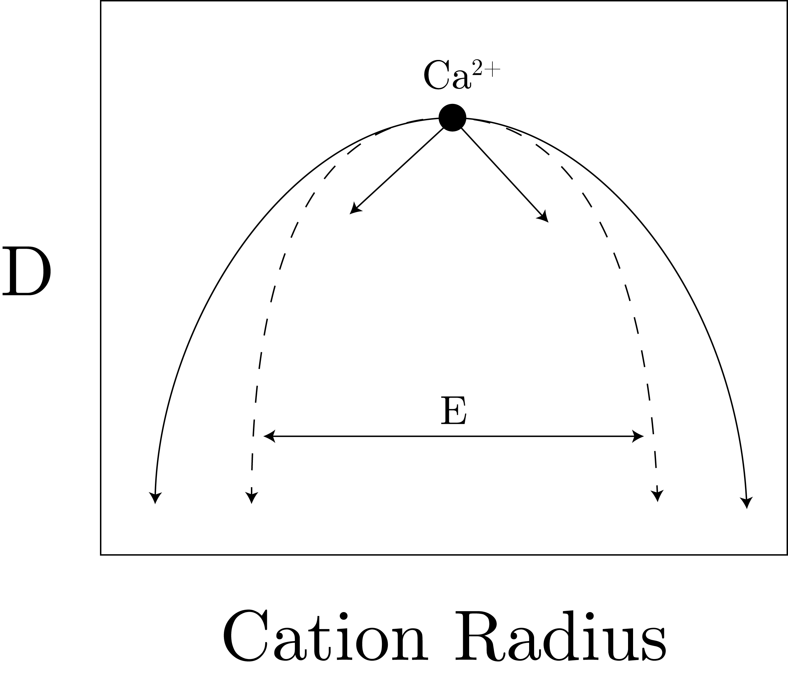
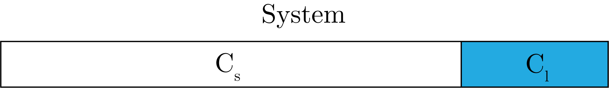
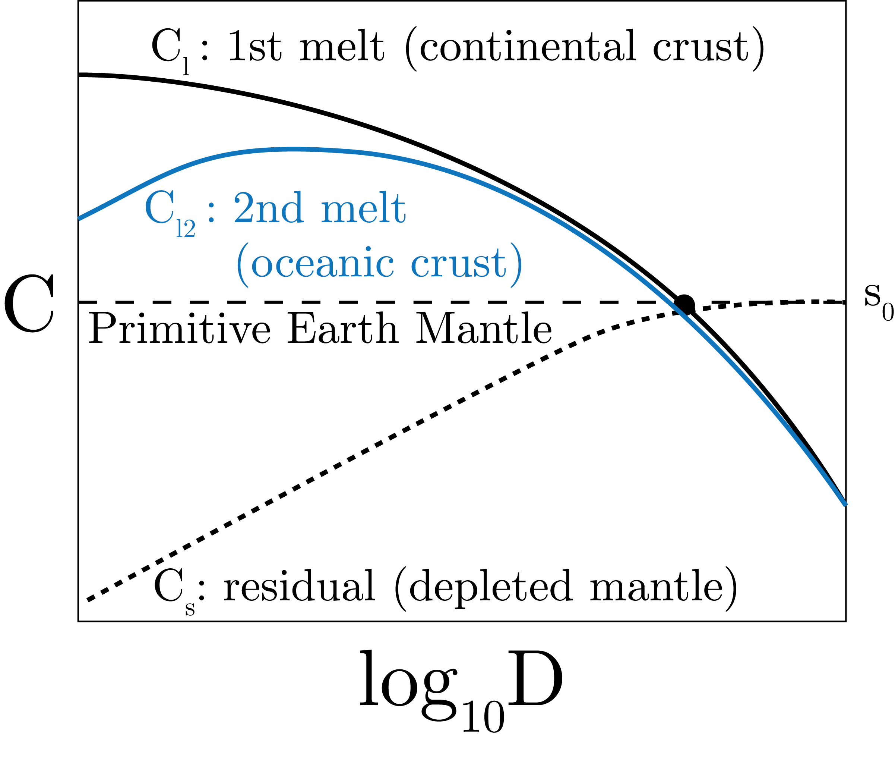
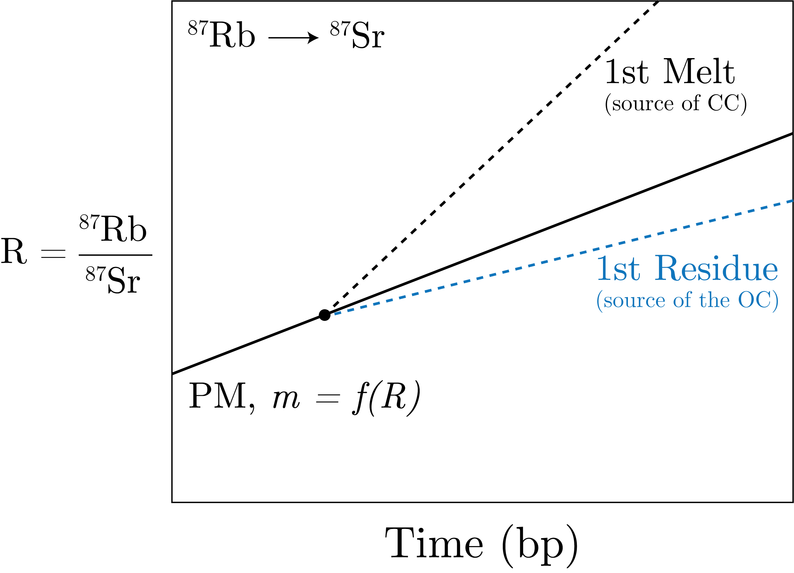

We are interested in understanding why there is a spread in different parent / daughter ratios.
Now, there are a few configurations of isotopes we are interested in, and they are often in tetrhedral and octohedral configurations.
We can define a few ratio of radius of cations to anions of the isotopes we are interested in:
\begin{align}
\text{Trigonal} \quad & \frac{R_c}{R_a} \sim 0.15 - 0.22 \\
\text{Tetrahedral} \quad & \frac{R_c}{R_a} \sim 0.22 - 0.41 \\
\text{Octohedral} \quad & \frac{R_c}{R_a} \sim 0.41 - 0.73 \\
\text{Cubic} \quad & \frac{R_c}{R_a} \sim 0.73 <
\end{align}
This means there is more space for the larger in decreasing configuration size.
If we want to replace one cation with a larger one, i.e. into a space that doesn't quite fit, we move to the "lattice-strain model".
This was developed by Bryce (1975) and expanded by Wood and Blundy (1997).
We start with the fact that when applying a stress, we get a strain:
\begin{equation}
\text{stress } \to \text{ strain} \sim \left[\text{N} \text{m}^{-2}\right] = \left[\text{Pa}\right].
\end{equation}
We can define the "Young's Modulus" by the ratio:
\begin{equation}
E = \frac{\text{stress}}{\text{strain}}.
\end{equation}
Next, we define the distribution coefficient, $D$, which defines the ability of the material to change phase, i.e.:
\begin{equation}
D = \frac{C_{solid}}{C_{liquid}},
\end{equation}
which are experimentally defined.
We can next define the dependency of temperature as:
\begin{equation}
D_i = D_0\exp\left[\Delta G / \left(RT\right)\right],
\end{equation}
where the strain energy
\begin{equation}
\Delta G = A\cdot E \cdot B \left[\frac{R_0}{2\left(r_i - r_0\right)^2} + \frac{1}{3\left(r_i - r_0\right)^3}\right].
\end{equation}
This shows us that the strain energy increases if the replacement radius is larger than the ideal radius.
This then gives a picture like Fig. 1, presented below.

Fig. 1: Strain energy vs. cation radius, related to the Young's Modulus.
Now, we want to determine the concentration from mixing, as given by Fig. 2.

Fig. 2: Our (closed) system of interest for mixing.
Given:
\begin{equation}
D = \frac{C_s}{C_l},
\end{equation}
we can get:
\begin{equation}
C_0 = C_lF + C_s(1 - F) = \frac{C_s}{D}F + C_s - C_sF.
\end{equation}
With some rearranging, we get:
\begin{equation}
C_s = \frac{DC_0}{F + D(1 - F)}.
\end{equation}
By the same algebra, we can also get:
\begin{equation}
C_d = \frac{C_0}{D + F(1 - D)}.
\end{equation}
Now, from this we can note:
\begin{equation}
\frac{C_l}{C_0} \sim \frac{1}{F} \quad \text{if} \quad D \ll F \quad \text{incompatible}
\end{equation}
We also get:
\begin{equation}
\frac{C_l}{C_0} \sim \frac{1}{D} \quad \text{if} \quad F \ll D \quad \text{compatible}.
\end{equation}
Next, we can plot this all out, for the concentration of the earth crust and mantle, in Fig. 3.

Fig. 3: How concentration $C$ varies with partition coefficients, $D$
Specifically, when we refer to the oceanic crust, we are talkig about the Mid Ocean Ridge Basalt (MORB).
Fig. 3 shows the progression from 1st melt and the residual to the 2nd melt.
We now want to look at the timne evolution of continental crust, which we plot in Fig. 4

Fig. 4: How the ratio of parent-daughter ratio changes in time for a specific isotope system.
To make this graph, we compare to see which $D$ is larger (i.e., the element which does not melt).
If the daughter is more compatible (larger $D$), then it will take longer to grow in the CC than in the OC and vice versa.
We can do a similar analysis for other isotope systems, like $^{147}$Sm/$^{143}$ Nd system (which is the opposite of the Fig. 4 scenario).
The key point here is as follows: the radiogenic isotope ratios are time-integrated parent/daughter element concentration ratios.
From data, we have determined the average age of the CC is $\mathcal{O}\left(10^{9}\right)$ years versus OC at $\mathcal{O}\left(10^{7}\right)$.
We note that for isochrons we are really interested in systems that are initially that are radiogenically homogeneous but chemically heterogeneous.